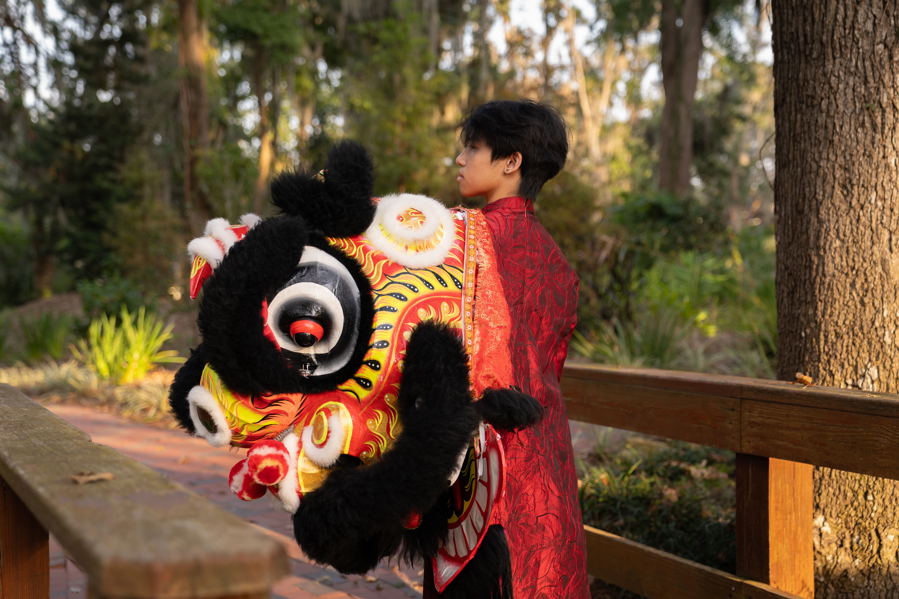

About Me

Hi, I’m Steven! I’m a third-year Digital Arts and Sciences major at the University of Florida with a minor in Media Production, Management, and Technology. I have a passion for industries in UI/UX, web design, and content management. In my career path, I want to be able to combine my technical skills with my creative abilities. Throughout my time at UF, I have become proficient in C++, Figma, and Adobe Creative Suite. Currently, I am exploring photography, 3D modeling, and animation.
Beyond academics, I co-founded and serve as President of the Lion Dance Team at UF. I am also a brother of Pi Delta Psi Fraternity, Incorporated. Previously, I have choreographed and taught eight lion dance pieces for the Vietnamese Student Association, Chinese American Student Association, and JiaTing Lion & Dragon Cultural Arts LLC. I have also earned the rank of Eagle Scout after being involved with both a Boy Scouts of America troop and a Vietnamese Scouting Troop.
In my free time, I’m usually watching films (I’ve logged 750+ on Letterboxd), editing small video projects, or playing video games like Teamfight Tactics and Marvel Rivals with friends. I’m also a big fan of K-pop, rap, and indie music!